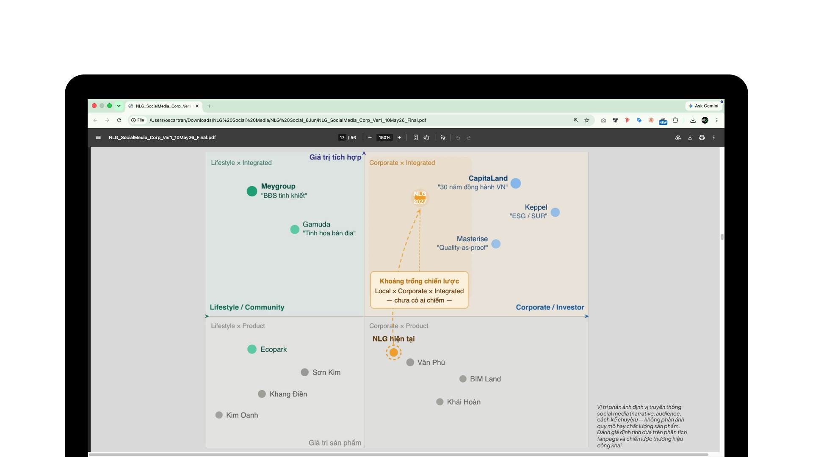
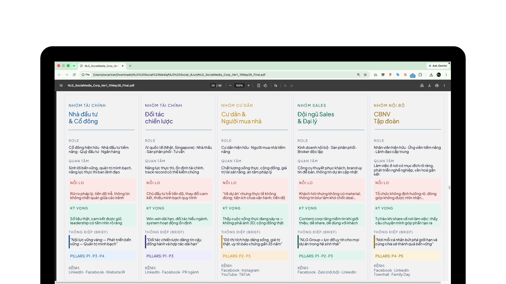
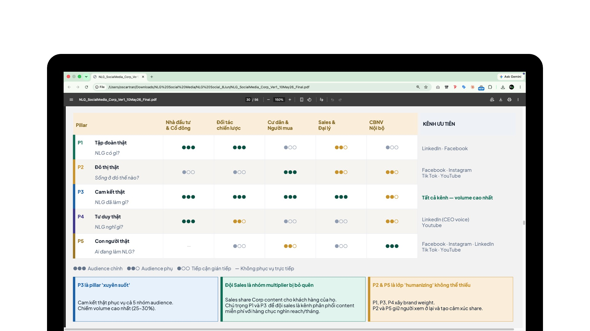
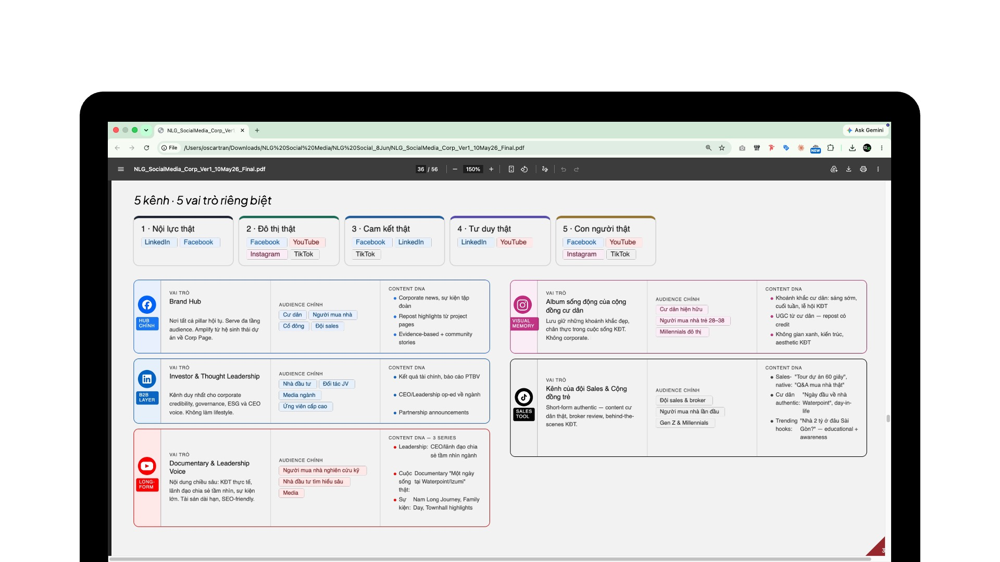
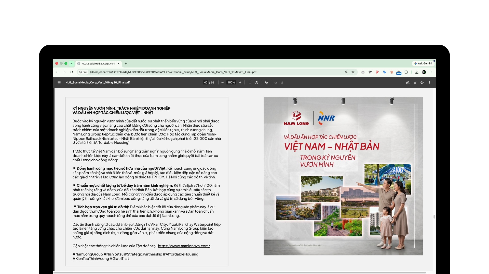
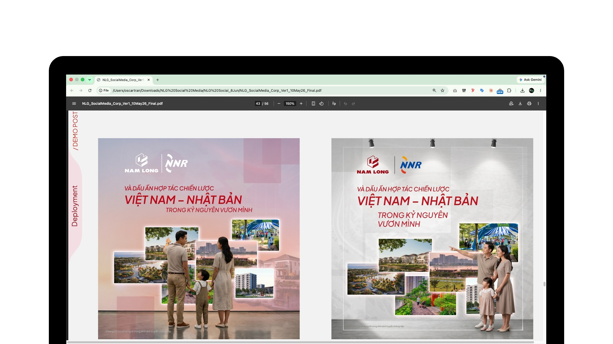
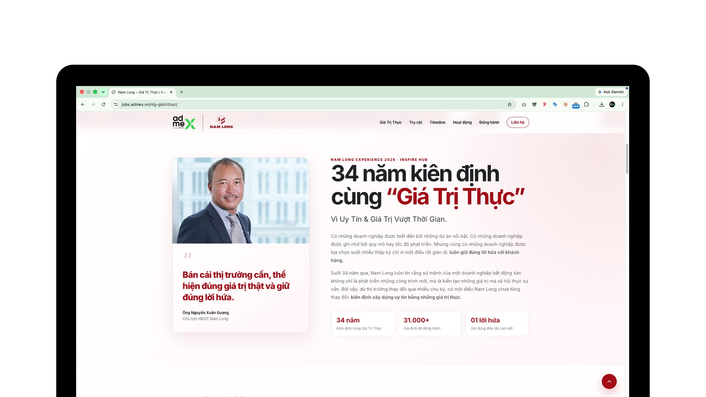
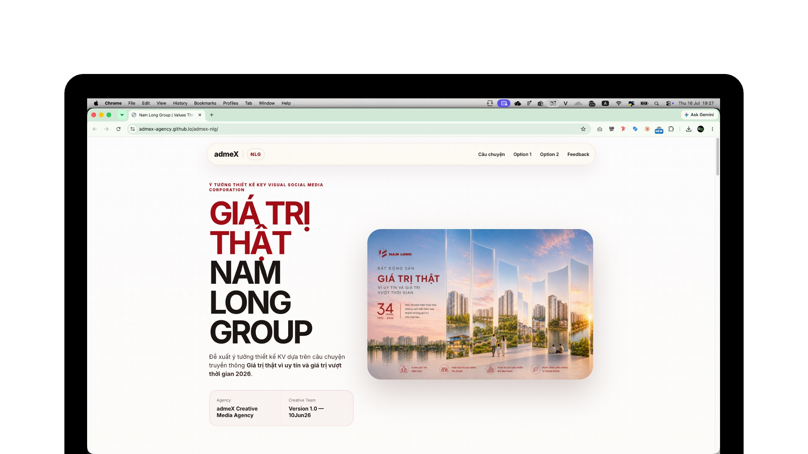

AI trở thành lớp năng lực mới của đội ngũ Pitching.
Trong bối cảnh không có nhân sự thiết kế thường trực, team không hạ chuẩn trực quan. Thay vào đó, team xây dựng một quy trình mới để AI tăng tốc sản xuất, còn con người giữ quyền quyết định về chiến lược, câu chuyện và chất lượng đầu ra.
Tăng hiệu suất, đồng thời tăng giá trị agency trong mắt khách hàng.
AI được ứng dụng xuyên suốt từ trực quan hóa ý tưởng, phát triển mockup, Key Visual, social post, storyboard iTVC, media dashboard đến HTML Interactive Proposal. Nhờ đó, những ý tưởng vốn chỉ tồn tại dưới dạng chữ được chuyển thành sản phẩm gần với thực tế triển khai, giúp khách hàng hiểu nhanh hơn, cảm nhận rõ hơn và đánh giá trực tiếp năng lực tư vấn của agency.
Ý tưởng tốt chưa đủ nếu khách hàng không nhìn thấy giá trị của nó.
Ba giới hạn thường trực của pitching là thời gian ngắn, nguồn lực thiết kế hạn chế và format trình bày chưa đủ sức giúp khách hàng hình dung chiến dịch trong thực tế.
Proposal phụ thuộc vào slide và khả năng diễn giải bằng lời.
Ý tưởng chiến lược thường được mô tả bằng text, hình tham khảo hoặc layout khuôn mẫu. Khách hàng phải tự tưởng tượng sản phẩm cuối cùng và trải nghiệm thực thi.
Proposal trở thành trải nghiệm trực quan có thể tương tác.
Khách hàng được nhìn thấy Key Visual, social post, mockup media, storyboard, dashboard và một HTML Proposal vận hành như sản phẩm số thực tế.
AI tạo lợi thế ở ba tầng: tốc độ, chất lượng và khác biệt.
Hiệu suất chỉ là tầng đầu tiên. Giá trị lớn hơn là khả năng nâng chuẩn sản phẩm pitching và tạo ra trải nghiệm mà các format truyền thống khó đạt được.
Rút ngắn thời gian chuyển hóa ý tưởng.
Từ chiến lược đến mockup, hình minh họa hoặc prototype được thực hiện trong cùng một vòng phát triển, giảm thời gian chờ và phụ thuộc nguồn lực.
Nâng giá trị của đề xuất.
Ý tưởng được trình bày dưới dạng gần với sản phẩm thực tế, giúp khách hàng đánh giá rõ hơn tính khả thi, chất lượng tư vấn và năng lực triển khai.
Tạo khác biệt cho agency.
HTML Proposal, prototype và hệ thống trực quan biến buổi pitch từ một phần trình chiếu thành trải nghiệm giải pháp có dấu ấn riêng.
AI mở rộng năng lực sản xuất. Con người giữ quyền thiết kế trải nghiệm.
Không giao chiến lược cho AI và không xem output đầu tiên là sản phẩm cuối cùng. Chất lượng đến từ quá trình lựa chọn, kiểm chứng và tinh chỉnh có chủ đích.
AI đảm nhiệm
Tạo nhiều phương án hình ảnh; phát triển mockup nhanh; chuyển hóa dữ liệu thành biểu đồ trực quan; hỗ trợ storyboard; tạo prototype HTML; tăng tốc chỉnh sửa và adapt theo từng format.
Tốc độ, quy mô sản xuất, khả năng thử nghiệm.
Con người quyết định
Xác định insight, concept, thông điệp; thiết kế flow proposal; kiểm soát brand fit; lựa chọn hình ảnh; đánh giá tính khả thi; kết nối output với mục tiêu kinh doanh và chịu trách nhiệm cho đề xuất cuối cùng.
Nguyên tắc: AI tạo phương tiện. Con người thiết kế trải nghiệm và giá trị thương mại.
Trực quan hóa toàn bộ hệ thống ý tưởng Nam Long.
Hai proposal được xây dựng như một hệ sinh thái đầu ra đồng bộ. Từ nghiên cứu, media planning, creative direction đến prototype, khách hàng có thể nhìn thấy logic chiến lược và hình dung rõ sản phẩm trước khi triển khai.
Market Mapping & Planning Dashboard
Dữ liệu thị trường, nhóm công chúng, hành trình nội dung và logic lựa chọn kênh được chuyển thành dashboard trực quan, giúp rút ngắn thời gian diễn giải.
Key Visual & Storytelling
Thông điệp “Giá Trị Thực”, demo social content và các hướng thể hiện được mô phỏng gần với đầu ra sản xuất, thay vì dừng ở mô tả bằng chữ.
Corporate & Campaign Website
Nam Long Corporate, Nam Long Experience và contest “Sức Sống Nam Long” được phát triển thành các trải nghiệm website có thể vận hành và tương tác.
Mockup & Production Direction
Các mockup, storyboard và kế hoạch thực thi giúp thống nhất kỳ vọng giữa Strategy, Account, khách hàng và đội ngũ sản xuất ngay từ giai đoạn pitching.








Thay PowerPoint bằng HTML Web Proposal.
Khách hàng không chỉ xem proposal. Khách hàng có thể trải nghiệm cách một sản phẩm số thực tế vận hành, ngay trong chính bài pitch.
Từ slide presentation sang interactive digital experience.
HTML giúp nội dung được tổ chức theo hành trình, có tương tác, có chuyển động và có khả năng mô phỏng sản phẩm thực tế. Proposal vì thế trở thành bằng chứng trực tiếp cho năng lực tư duy, sáng tạo và triển khai của agency.
Hai ý tưởng được chuyển thành sản phẩm có thể trải nghiệm ngay.
Prototype giúp khách hàng không phải tự tưởng tượng. Họ có thể trực tiếp xem cách Key Visual, nội dung và trải nghiệm số sẽ vận hành trước khi quyết định triển khai.
Nam Long Experience — Giá Trị Thực
HTML đề xuất ý tưởng Key Visual và cách triển khai creative platform.
Contest “Sức Sống Nam Long”
Landing page với gallery, hướng dẫn, thể lệ, giải thưởng, gửi ảnh và bình chọn.
Hiệu suất được chuyển hóa thành kết quả kinh doanh.
Case chứng minh rằng đầu tư vào phương pháp pitching mới không chỉ cải thiện hình thức trình bày, mà trực tiếp nâng khả năng cạnh tranh và giá trị agency.
Tổng giá trị hai gói thầu chiến thắng. Đây là kết quả của việc kết hợp tư duy chiến lược, trực quan hóa bằng AI và trải nghiệm HTML Proposal có khả năng giúp khách hàng nhìn thấy trước sản phẩm sẽ được triển khai.
Thắng gói thầu Nam Long Corporate.
Thắng gói thầu Nam Long Experience.
Ba năng lực cần được nhân rộng.
Training không nên dừng ở hướng dẫn công cụ. Trọng tâm là cách biến AI thành một phần của quy trình tạo giá trị.
Chuyển hóa chiến lược thành hình ảnh.
Biết xác định phần nào của ý tưởng cần được trực quan hóa để khách hàng hiểu nhanh và cảm nhận đúng.
Thiết kế flow trình bày.
Không xếp slide theo nội dung có sẵn; xây hành trình giúp khách hàng đi từ bối cảnh đến niềm tin và quyết định.
Kiểm soát đầu ra AI.
Đánh giá brand fit, tính thực tế, logic sản xuất và khả năng phục vụ mục tiêu kinh doanh trước khi sử dụng.
Không dùng AI để làm proposal nhanh hơn. Dùng AI để biến proposal thành lợi thế cạnh tranh của agency.
Khi tốc độ sản xuất được kết hợp với tư duy chiến lược và thiết kế trải nghiệm, proposal không còn là tài liệu bán ý tưởng. Nó trở thành bằng chứng cho năng lực tạo ra giá trị.